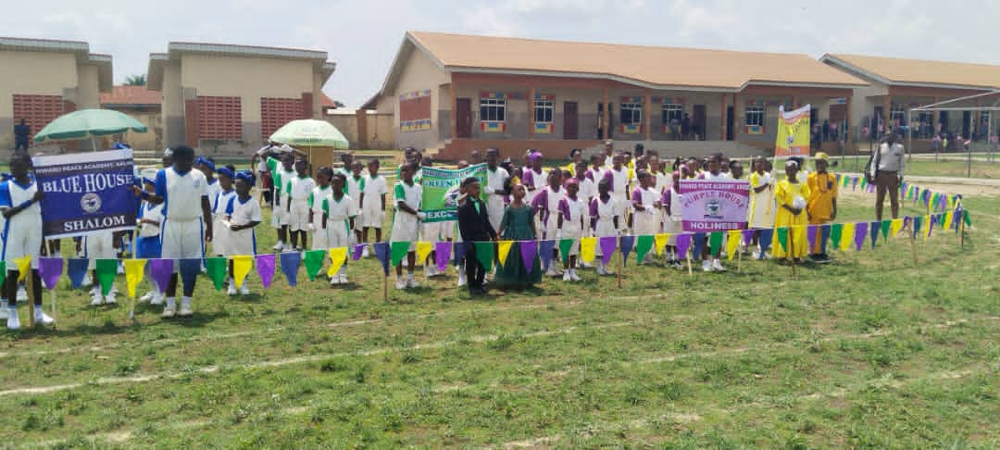

Early Years
Early learning lays the groundwork for what follows. A thoughtful stage makes space for curiosity, play, language, social development and exploration, helping children become comfortable learners and friends.
Learning that moves forward
Children build knowledge step by step. Explore the learning stages and the broad curriculum areas proposed for Inward Peace Academy.

The learning journey
Stage ages, class names and progression details should be confirmed with the school.
Early learning lays the groundwork for what follows. A thoughtful stage makes space for curiosity, play, language, social development and exploration, helping children become comfortable learners and friends.
Pupils strengthen early literacy and numeracy while making connections across what they learn. They practise communicating ideas, following their curiosity and building more independent learning habits.
As their understanding deepens, pupils can take on more complex questions, apply problem-solving skills and grow in confidence as they prepare for the next stage of their education.
A broad foundation
Our curriculum builds strong foundations in communication, numeracy, science and responsible citizenship.
Learning in action
A rich learning experience creates opportunities to think deeply, communicate clearly and work through new challenges.
Consider questions carefully and form reasoned ideas.
Explore original ideas and different ways of expressing them.
Share ideas with growing clarity and listen well.
Learn with others and contribute to shared work.
Try strategies, learn from setbacks and keep thinking.
Assessment & progress
Assessment can help teachers and families recognise what a pupil understands, identify where further support may be useful, and discuss progress over time.
Confirm and describe the school's actual assessment methods, reporting schedule and family communication process here. No assessment policy has been supplied.

Plan the next step
Ask the school about its curriculum, class structure and admissions process.